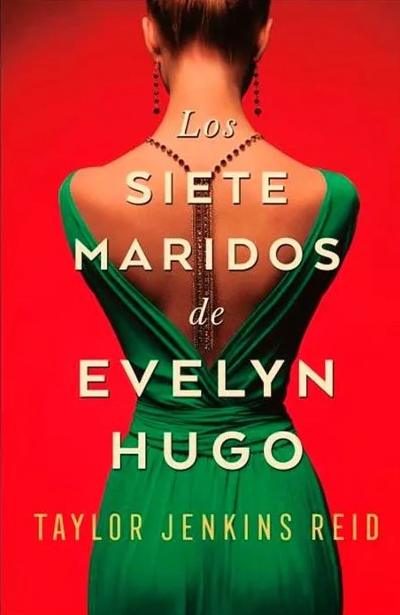

Características del libro
Autor: Taylor Jenkins Reid
Encuadernación: Rústica
N.° páginas: 380
Idioma: Español
Definición
Convocada en el lujoso apartamento de Evelyn, Monique escucha fascinada mientras la actriz le cuenta su historia. Desde su llegada a Los Ángeles en los años 50 hasta su decisión de abandonar su carrera en el mundo del espectáculo en los 80 —y, desde luego, los siete maridos que tuvo en ese tiempo—, Evelyn narra una historia de ambición implacable, amistad inesperada y un gran amor prohibido...
Precio:
$76.000